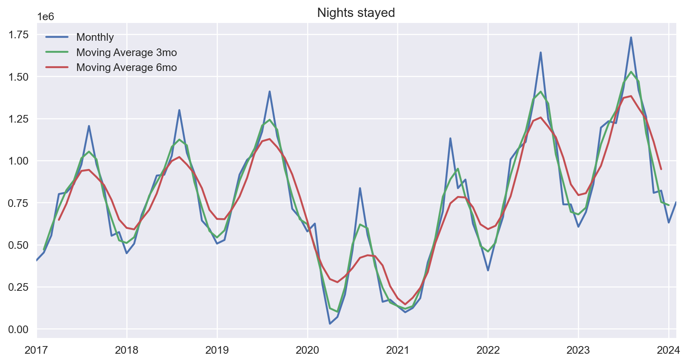
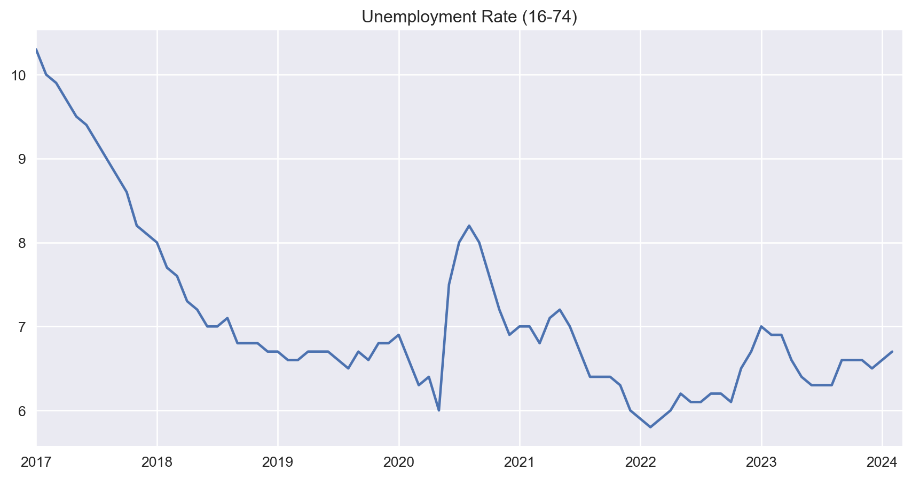
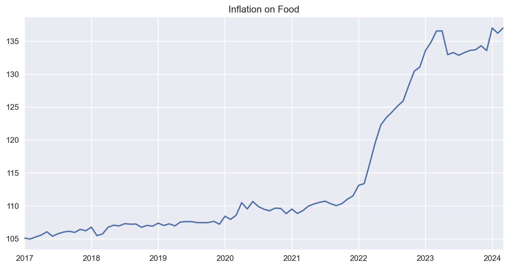
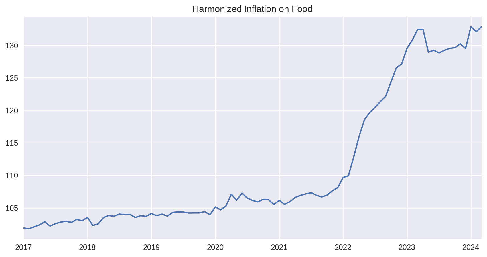

| indicator | unit | source |
|---|---|---|
| Dormidas (N.º) nos estabelecimentos de alojamento turístico | Number of Stays | INE |
| Hóspedes (N.º) nos estabelecimentos de alojamento turístico | Number of guests (persons) | INE |
| Gastos de turistas estrangeiros | € spent | Banco de Portugal |
| Indicador de confiança dos consumidores-Mensal-sre (vcs) | Balance of extreme responses | Banco de Portugal |
| Indicador de sentimento económico (1990-(A-1)=100)-Mensal (vcs) | Current value vs. base value (1990) | Banco de Portugal |
| Taxa de desemprego 16 a 74 anos-Estimativas mensais (vcs) | Percentage | Banco de Portugal |
| IPC (2012=100)-bens alimentares | Current value vs. base value (2012) | Banco de Portugal |
| IHPC (2015=100)-Bens alimentares-M | Current value vs. base value (2015) | Banco de Portugal |
| Índice negócios Retalho - Alimentares estab especializados-M (vcsc) | Current value vs. base value (2015) | Banco de Portugal |
Portugal Tourism and Economy Report
This is a fully automated report of Portuguese Tourism and Economic indicators, developed to streamline and democratize access to these important pieces of data on the Portuguese economy.
The main focus of this particular report is:
- Tourism indicators:
- Nights stayed
- Guests
- € spent
- Economic indicators:
- Consumer inflation
- Sentiment on the direction the country it’s taking
- Retail Volume Index
- Unemployment rate
Data comes from two main sources:
- INE (Portuguese Statistics Institute)
- Banco de Portugal
In addition, individual references are always provided.
Last update
This report was generated on 2024-04-17 21:15
If you’re interested in the summarized results, jump to: Section 3
These are the KPIs we’re keeping track of:
Caveats:
- Data availability may vary since there are different sources. INE’s tourism data may be released at a different time than Banco de Portugal’s, for instance.
Tourism
API call failed for URL: https://www.ine.pt/ine/json_indicador/pindica.jsp?op=2&varcd=0009812&lang=PT&Dim1=S3A202403&Dim2=11&Dim3=T
API call failed for URL: https://www.ine.pt/ine/json_indicador/pindica.jsp?op=2&varcd=0009812&lang=PT&Dim1=S3A202404&Dim2=11&Dim3=T
API call failed for URL: https://www.ine.pt/ine/json_indicador/pindica.jsp?op=2&varcd=0009812&lang=PT&Dim1=S3A202405&Dim2=11&Dim3=T
API call failed for URL: https://www.ine.pt/ine/json_indicador/pindica.jsp?op=2&varcd=0009812&lang=PT&Dim1=S3A202406&Dim2=11&Dim3=T
API call failed for URL: https://www.ine.pt/ine/json_indicador/pindica.jsp?op=2&varcd=0009812&lang=PT&Dim1=S3A202407&Dim2=11&Dim3=T
API call failed for URL: https://www.ine.pt/ine/json_indicador/pindica.jsp?op=2&varcd=0009812&lang=PT&Dim1=S3A202408&Dim2=11&Dim3=T
API call failed for URL: https://www.ine.pt/ine/json_indicador/pindica.jsp?op=2&varcd=0009812&lang=PT&Dim1=S3A202409&Dim2=11&Dim3=T
API call failed for URL: https://www.ine.pt/ine/json_indicador/pindica.jsp?op=2&varcd=0009812&lang=PT&Dim1=S3A202410&Dim2=11&Dim3=T
API call failed for URL: https://www.ine.pt/ine/json_indicador/pindica.jsp?op=2&varcd=0009812&lang=PT&Dim1=S3A202411&Dim2=11&Dim3=T
API call failed for URL: https://www.ine.pt/ine/json_indicador/pindica.jsp?op=2&varcd=0009812&lang=PT&Dim1=S3A202412&Dim2=11&Dim3=T
API call failed for URL: https://www.ine.pt/ine/json_indicador/pindica.jsp?op=2&varcd=0009808&lang=PT&Dim1=S3A202403&Dim2=11&Dim3=T
API call failed for URL: https://www.ine.pt/ine/json_indicador/pindica.jsp?op=2&varcd=0009808&lang=PT&Dim1=S3A202404&Dim2=11&Dim3=T
API call failed for URL: https://www.ine.pt/ine/json_indicador/pindica.jsp?op=2&varcd=0009808&lang=PT&Dim1=S3A202405&Dim2=11&Dim3=T
API call failed for URL: https://www.ine.pt/ine/json_indicador/pindica.jsp?op=2&varcd=0009808&lang=PT&Dim1=S3A202406&Dim2=11&Dim3=T
API call failed for URL: https://www.ine.pt/ine/json_indicador/pindica.jsp?op=2&varcd=0009808&lang=PT&Dim1=S3A202407&Dim2=11&Dim3=T
API call failed for URL: https://www.ine.pt/ine/json_indicador/pindica.jsp?op=2&varcd=0009808&lang=PT&Dim1=S3A202408&Dim2=11&Dim3=T
API call failed for URL: https://www.ine.pt/ine/json_indicador/pindica.jsp?op=2&varcd=0009808&lang=PT&Dim1=S3A202409&Dim2=11&Dim3=T
API call failed for URL: https://www.ine.pt/ine/json_indicador/pindica.jsp?op=2&varcd=0009808&lang=PT&Dim1=S3A202410&Dim2=11&Dim3=T
API call failed for URL: https://www.ine.pt/ine/json_indicador/pindica.jsp?op=2&varcd=0009808&lang=PT&Dim1=S3A202411&Dim2=11&Dim3=T
API call failed for URL: https://www.ine.pt/ine/json_indicador/pindica.jsp?op=2&varcd=0009808&lang=PT&Dim1=S3A202412&Dim2=11&Dim3=TNights stayed (Dormidas)
0009808 - Nights (No.) in tourist accommodation establishments by Geographic localization (NUTS - 2013) and Type (tourist accommodation establishment); Monthly
Source: INE
Filter used:
- Geopraphic location: Mainland Portugal
- Type of tourist establishment: All

| month_year | dormidas_AA | dormidas_MA | dormidas | dif_AA | dif_AA_pct | dif_MA | dif_MA_pct |
|---|---|---|---|---|---|---|---|
| Setembro 2023 | 1245424 | 1731186 | 1417746 | +172322 | +13.84% | -313440 | -18.11% |
| Outubro 2023 | 1127059 | 1417746 | 1259783 | +132724 | +11.78% | -157963 | -11.14% |
| Novembro 2023 | 739381 | 1259783 | 807840 | +68459 | +9.26% | -451943 | -35.87% |
| Dezembro 2023 | 739346 | 807840 | 820956 | +81610 | +11.04% | +13116 | +1.62% |
| Janeiro 2024 | 606353 | 820956 | 631211 | +24858 | +4.10% | -189745 | -23.11% |
| Fevereiro 2024 | 693443 | 631211 | 752726 | +59283 | +8.55% | +121515 | +19.25% |
The latest month (Fevereiro 2024) had 752726 stays.
- That’s +59283 (or +8.55%) compared to the same month last year: 693443
- and +121515 (or +19.25%) compared to the last calendar month: 631211
Guests (Hóspedes)
0009812 - Guests (No.) in tourist accommodation establishments by Geographic localization (NUTS - 2013) and Type (tourist accommodation establishment); Monthly
Source: INE
Filter used:
- Geopraphic location: Mainland Portugal
- Type of tourist establishment: All
| month_year | hospedes_AA | hospedes_MA | hospedes | dif_AA | dif_AA_pct | dif_MA | dif_MA_pct |
|---|---|---|---|---|---|---|---|
| Setembro 2023 | 651951 | 833480 | 741616 | +89665 | +13.75% | -91864 | -11.02% |
| Outubro 2023 | 601520 | 741616 | 665907 | +64387 | +10.70% | -75709 | -10.21% |
| Novembro 2023 | 402232 | 665907 | 441169 | +38937 | +9.68% | -224738 | -33.75% |
| Dezembro 2023 | 411875 | 441169 | 461186 | +49311 | +11.97% | +20017 | +4.54% |
| Janeiro 2024 | 339360 | 461186 | 359413 | +20053 | +5.91% | -101773 | -22.07% |
| Fevereiro 2024 | 380588 | 359413 | 417235 | +36647 | +9.63% | +57822 | +16.09% |
The latest month (Fevereiro 2024) had 417235 guests.
- That’s +36647 (or +9.63%) compared to the same month last year: 380588
- and +57822 (or +16.09%) compared to the last calendar month: 359413
Tourism Spending (Gasto de turistas estrangeiros)
Exportações (crédito) da balança de serviços: viagens e turismo - valores mensais em milhões de euros
Source: Banco de Portugal

| date | gastos_turistas | month | year | valor_AA | valor_MA | dif_AA | dif_AA_pct | dif_MA | dif_MA_pct |
|---|---|---|---|---|---|---|---|---|---|
| 2023-08-31 00:00:00 | 3923.81 | August | 2023 | 3544.37 | 3092.00 | +3544.37 | +10.71% | +3092.0 | +26.90% |
| 2023-09-30 00:00:00 | 2789.01 | September | 2023 | 2389.69 | 3923.81 | +2389.69 | +16.71% | +3923.81 | -28.92% |
| 2023-10-31 00:00:00 | 2156.79 | October | 2023 | 1865.96 | 2789.01 | +1865.96 | +15.59% | +2789.01 | -22.67% |
| 2023-11-30 00:00:00 | 1368.45 | November | 2023 | 1228.85 | 2156.79 | +1228.85 | +11.36% | +2156.79 | -36.55% |
| 2023-12-31 00:00:00 | 1425.73 | December | 2023 | 1259.81 | 1368.45 | +1259.81 | +13.17% | +1368.45 | +4.19% |
| 2024-01-31 00:00:00 | 1411.51 | January | 2024 | 1269.03 | 1425.73 | +1269.03 | +11.23% | +1425.73 | -1.00% |
Tourists spent €1411.51 millions in the latest month (January 2024).
- That’s €1269.03 millions (or +11.23%) compared to the same month last year: €1269.03 millions
- and €1425.73 millions (or -1.00%) compared to the last calendar month: €1425.73 millions
Economic Indicators
Consumer Confidence Index - Confiança do Consumidor
Confidence indicators belong to the set of short-term indicators that allow monitoring the evolution of the economic situation and anticipating the evolution of the main macroeconomic aggregates for Portugal.
Indicador de confiança dos consumidores-Mensal-sre (vcs)
Source: Banco de Portugal
| date | confianca_consumidor | month | year | valor_AA | valor_MA | dif_AA | dif_AA_pct | dif_MA | dif_MA_pct |
|---|---|---|---|---|---|---|---|---|---|
| 2023-10-31 00:00:00 | -27.50 | October | 2023 | -37.60 | -26.40 | -37.6 | +26.86% | -26.4 | -4.17% |
| 2023-11-30 00:00:00 | -30.50 | November | 2023 | -37.70 | -27.50 | -37.7 | +19.10% | -27.5 | -10.91% |
| 2023-12-31 00:00:00 | -26.10 | December | 2023 | -36.60 | -30.50 | -36.6 | +28.69% | -30.5 | +14.43% |
| 2024-01-31 00:00:00 | -23.90 | January | 2024 | -35.10 | -26.10 | -35.1 | +31.91% | -26.1 | +8.43% |
| 2024-02-29 00:00:00 | -23.20 | February | 2024 | -32.50 | -23.90 | -32.5 | +28.62% | -23.9 | +2.93% |
| 2024-03-31 00:00:00 | -20.60 | March | 2024 | -31.90 | -23.20 | -31.9 | +35.42% | -23.2 | +11.21% |
The Consumer Confidence Index was -20.6 in the latest month (March 2024).
- That’s -31.9 (or +35.42%) compared to the same month last year: -31.9
- and -23.2 (or +11.21%) compared to the last calendar month: -23.2
Economic Sentiment Indicator (Sentimento Economico)
The Economic Sentiment Indicator (ESI) is a composite indicator produced by the European Commission’s Directorate-General for Economic and Financial Affairs (DG ECFIN). Its objective is to monitor GDP growth at the level of Member States, the EU and the euro area.
Source: Banco de Portugal and European Comission
| date | sentimento_economico | month | year | valor_AA | valor_MA | dif_AA | dif_AA_pct | dif_MA | dif_MA_pct |
|---|---|---|---|---|---|---|---|---|---|
| 2023-10-31 00:00:00 | 94.60 | October | 2023 | 98.50 | 95.70 | +98.5 | -3.96% | +95.7 | -1.15% |
| 2023-11-30 00:00:00 | 96 | November | 2023 | 97.60 | 94.60 | +97.6 | -1.64% | +94.6 | +1.48% |
| 2023-12-31 00:00:00 | 96.40 | December | 2023 | 97.00 | 96.00 | +97.0 | -0.62% | +96.0 | +0.42% |
| 2024-01-31 00:00:00 | 97.60 | January | 2024 | 98.30 | 96.40 | +98.3 | -0.71% | +96.4 | +1.24% |
| 2024-02-29 00:00:00 | 100.10 | February | 2024 | 102.80 | 97.60 | +102.8 | -2.63% | +97.6 | +2.56% |
| 2024-03-31 00:00:00 | 100.80 | March | 2024 | 101.90 | 100.10 | +101.9 | -1.08% | +100.1 | +0.70% |
The Economic Sentiment Index was 100.8 in the latest month (March 2024).
- That’s 101.9 (or -1.08%) compared to the same month last year: 101.9
- and 100.1 (or +0.70%) compared to the last calendar month: 100.1
Unemployment (Desemprego 16 a 74 anos)
Taxa de desemprego 16 a 74 anos-Estimativas mensais (vcs) Monthly Unemployment Rate (%)
Source: Banco de Portugal

| date | desemprego | month | year | valor_AA | valor_MA | dif_AA | dif_AA_pct | dif_MA | dif_MA_pct |
|---|---|---|---|---|---|---|---|---|---|
| 2023-09-30 00:00:00 | 6.60 | September | 2023 | 6.20 | 6.30 | +6.2 | +6.45% | +6.3 | +4.76% |
| 2023-10-31 00:00:00 | 6.60 | October | 2023 | 6.10 | 6.60 | +6.1 | +8.20% | +6.6 | 0.00% |
| 2023-11-30 00:00:00 | 6.60 | November | 2023 | 6.50 | 6.60 | +6.5 | +1.54% | +6.6 | 0.00% |
| 2023-12-31 00:00:00 | 6.50 | December | 2023 | 6.70 | 6.60 | +6.7 | -2.99% | +6.6 | -1.52% |
| 2024-01-31 00:00:00 | 6.60 | January | 2024 | 7.00 | 6.50 | +7.0 | -5.71% | +6.5 | +1.54% |
| 2024-02-29 00:00:00 | 6.70 | February | 2024 | 6.90 | 6.60 | +6.9 | -2.90% | +6.6 | +1.52% |
The Unemployment rate was 6.7% in the latest month (February 2024).
- That’s 6.9p.p compared to the same month last year: 6.9%
- and 6.6p.p compared to the last calendar month: 6.6%
Inflation on Food (IPC sobre bens alimentares)
IPC (2012=100)-produtos alimentares e bebidas não alcoólicas
Source: Banco de Portugal

| date | ipc_alimentos | month | year | valor_AA | valor_MA | dif_AA | dif_AA_pct | dif_MA | dif_MA_pct |
|---|---|---|---|---|---|---|---|---|---|
| 2023-10-31 00:00:00 | 133.69 | October | 2023 | 128.24 | 133.60 | +128.24 | +4.25% | +133.6 | +0.07% |
| 2023-11-30 00:00:00 | 134.30 | November | 2023 | 130.44 | 133.69 | +130.44 | +2.96% | +133.69 | +0.46% |
| 2023-12-31 00:00:00 | 133.57 | December | 2023 | 131.08 | 134.30 | +131.08 | +1.90% | +134.3 | -0.55% |
| 2024-01-31 00:00:00 | 137 | January | 2024 | 133.55 | 133.57 | +133.55 | +2.59% | +133.57 | +2.57% |
| 2024-02-29 00:00:00 | 136.21 | February | 2024 | 134.84 | 137.00 | +134.84 | +1.02% | +137.0 | -0.58% |
| 2024-03-31 00:00:00 | 137.02 | March | 2024 | 136.55 | 136.21 | +136.55 | +0.35% | +136.21 | +0.60% |
The Inflation on Food was 137.023 in the latest month (March 2024).
- That’s +0.35% compared to the same month last year: 136.547
- and +0.60% compared to the last calendar month: 136.211
Harmonized Inflation on Food (Inflação Harmonizada - IHPC sobre bens alimentares)
IHPC (2015=100)-Bens alimentares-M
Source: Banco de Portugal

| date | ihpc_alimentos | month | year | valor_AA | valor_MA | dif_AA | dif_AA_pct | dif_MA | dif_MA_pct |
|---|---|---|---|---|---|---|---|---|---|
| 2023-09-30 00:00:00 | 129.52 | September | 2023 | 122.11 | 129.21 | +122.11 | +6.07% | +129.21 | +0.24% |
| 2023-10-31 00:00:00 | 129.61 | October | 2023 | 124.36 | 129.52 | +124.36 | +4.22% | +129.52 | +0.07% |
| 2023-11-30 00:00:00 | 130.20 | November | 2023 | 126.50 | 129.61 | +126.5 | +2.92% | +129.61 | +0.46% |
| 2023-12-31 00:00:00 | 129.50 | December | 2023 | 127.11 | 130.20 | +127.11 | +1.88% | +130.2 | -0.54% |
| 2024-01-31 00:00:00 | 132.81 | January | 2024 | 129.51 | 129.50 | +129.51 | +2.55% | +129.5 | +2.56% |
| 2024-02-29 00:00:00 | 132.06 | February | 2024 | 130.78 | 132.81 | +130.78 | +0.98% | +132.81 | -0.56% |
The Harmonized Index of Inflation on Food was 132.06 in the latest month (February 2024).
- That’s +0.98% compared to the same month last year: 130.78
- and -0.56% compared to the last calendar month: 132.81
Food Retail Index (Índice Retalho alimentos)
Índice Volume negócios a retalho - Alimentares estab especializados-M (vcsc) Food, beverage and tobacco products, in specialized establishments
Source: Banco de Portugal
| date | volume_retalho_alimentar | month | year | valor_AA | valor_MA | dif_AA | dif_AA_pct | dif_MA | dif_MA_pct |
|---|---|---|---|---|---|---|---|---|---|
| 2023-09-30 00:00:00 | 102.30 | September | 2023 | 104.10 | 102.30 | +104.1 | -1.73% | +102.3 | 0.00% |
| 2023-10-31 00:00:00 | 100.10 | October | 2023 | 104.20 | 102.30 | +104.2 | -3.93% | +102.3 | -2.15% |
| 2023-11-30 00:00:00 | 99.80 | November | 2023 | 103.20 | 100.10 | +103.2 | -3.29% | +100.1 | -0.30% |
| 2023-12-31 00:00:00 | 97.20 | December | 2023 | 101.20 | 99.80 | +101.2 | -3.95% | +99.8 | -2.61% |
| 2024-01-31 00:00:00 | 95.70 | January | 2024 | 101.60 | 97.20 | +101.6 | -5.81% | +97.2 | -1.54% |
| 2024-02-29 00:00:00 | 95.50 | February | 2024 | 101.60 | 95.70 | +101.6 | -6.00% | +95.7 | -0.21% |
The Retail Index was 95.5 in the latest month (February 2024).
- That’s 101.6 (or -6.00%) compared to the same month last year: 101.6
- and 95.7 (or -0.21%) compared to the last calendar month: 95.7
Summary - Results
The Consumer Confidence Index went up 35.42% compared to last year 📈
Tourism Spending went up 11.23% compared to last year 📈
The number of Guests in Tourism Establishments went up 9.63% compared to last year 📈
The number of Stays in Tourism Establishments went up 8.55% compared to last year 📈
The Retail Index went down -6.00% compared to last year 📉
The most important results this month were:
That’s the end of this month’s report. Thanks for following, see you next month!